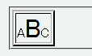

子孫セレクタなどにtbodyをクラスセレクタとして使用した場合、そのブロックのスタイル指定が無視されることがある。
<style type="text/css">
tbody.a span.b {
font-size: 2em;
}
</style>
<table border="2">
<tbody class="a">
<tr><td>A<span class="b">B</span>C</td></tr>
</tbody>
</table>
| ABC |
N6.2.3での表示（標準モード）
外部スタイルシートで同様のことを行ってもスタイルが適用されました。
Moz1.0やN6.2.3ではスタイルが適用されています。
N6で、
<table>
<tbody class="foo">
<td><em class="bar">
とHTMLで記述して、外部CSSファイルで
tbody.foo em.bar{...
と定義しても、classなしのtd emとしてレンダリングされる。
tbody.foo td em.bar{...
td em.bar{...
などと記述しても一緒。
IE5.5では意図通りにレンダリングされるが、
W3C的にどちらが正しいのかは不明。